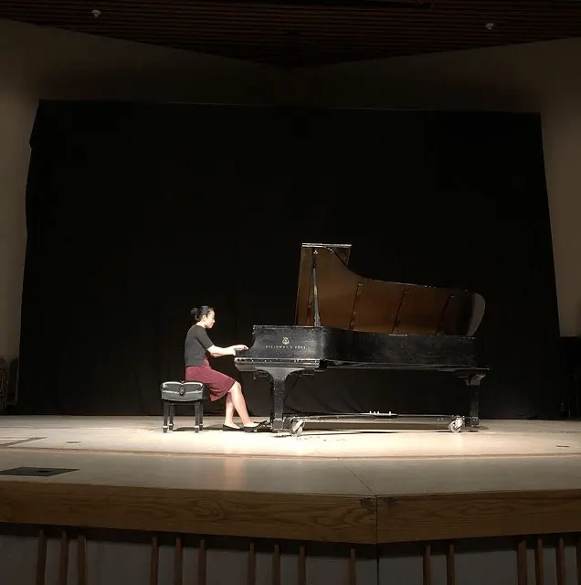

When I first came to Wellesley, I didn’t plan to study piano for one year, let alone four years. I certainly had zero intention of performing a recital. But after taking a break from piano in high school to focus on tennis, picking it back up again in college was one of the best decisions I have made. My piano instructor, Lois, was a key reason I made the decision. She was a short Jewish lady with a light spirit and a brilliant imagination. She made every lesson joyful and engaging—lessons were never long enough—and turned my approach to piano playing around 180º, physically, mentally, and emotionally.
The first two years, I learned to listen to myself and to the music, and to play from my shoulders and back instead of my wrists. Focusing on the mood is what matters, and the rest will fall into place, Lois would tell me. I learned to cushion the keys and slowly fall into them, like stepping in sand, rather than pushing or pressing them. I learned never to play a repetition the same. Lois showed me how to create shape and showed me techniques that reduced the tension in my body and magically made playing difficult parts easier, including keeping the fingers close to the keys, relaxing the shoulders and arms and letting them flow rather than tightening them up, scrunching the hand and tucking in the thumb to keep the hand from tightening up, flipping the hand and bringing the wrist/elbow in the direction of the next note or chord in anticipation to make for a smoother transition. One practice technique I found helpful was to practice standing up, using the ground and your entire body to reach a higher/lower range of the piano. Your body is a technical instrument!
It wasn’t all technique though. Lois showed me the importance of breathing and imagery, like imagining rolling hills when cushioning the keys. Go by the rhythm/the left hand beat, and the complex right hand melody notes will take care of themselves, she said. Lois taught me to focus on the big picture: Think about where each of the phrases is going, and how they relate to one another. Aiming to play in phrases rather than individual notes was revolutionary: playing chords not as separate chords but as a line of longer phrases, loosening my wrist and arm to create a fluid motion (like a jellyfish and a stingray). At the end of the day, it was important to play freely and not become engrossed in trying to get your arm to move a certain way. Emphasize the top voice/melody, and release the other voices. Play with the end goal in mind! I also learned that singing the melody helps establish the mood of the piece in my mind. She urged me to play the Gershwin Preludes with a more “bad girl,” “I can do whatever I want” attitude. Don’t be nice! she told me. My next step was to emphasize the melody and let it guide me, play with confidence and trust in the notes, and don’t second guess myself and get tangled in the individual notes. Commit to the music! Experiment with the music! Try new things, explore boundaries!
My junior year, I studied abroad in the fall. When I came back in the spring, I had to go back to the basics in a way (it’s funny how much of a difference it made to curl my fingers more on the Beethoven sonata!), including going back to the metronome. I also realized that a big problem I needed to overcome was focus—not letting my mind wander when I’m on stage or worry about making mistakes, but rather, focusing on communicating the message and passion of the music. That spring semester was one of the more frustrating ones, not only because I was recycling former pieces I had played many times, but also because I felt like I had plateaued and wasn’t getting anywhere, and struggled to maintain enthusiasm for the pieces. Thinking ahead to my future recital also distracted me and stressed me out about my performance. I had to remind myself why I was playing in the first place and why I enjoyed playing these pieces to be able to return to focusing on the music and the wonderful subtleties in each piece.
My main challenge going forward was to rediscover the enjoyment and enthusiasm for what I was playing, rather than waiting until I had technically mastered the piece. I learned to play more difficult pieces step by step, building up to developing the harder parts. Lois taught me ways to position my wrist and arm to make it easier—those small techniques and fingering tips made a huge difference!
I also improved in how I dealt with nerves. I was less nervous this time around during the end of semester jury than I was before. However, I was still nervous enough that my hands were shaking, and it’s hard to play well when your hands aren’t cooperating! Something I often struggled with is what to think about while you’re on stage. My mind wandered and very unhelpful thoughts would run through my mind, like what are the next notes? Or, don’t mess up! But unlike in the past, this time I also thought about how hard I’ve worked, how many hours I’ve spent in the practice room to get to this point, and how much I wanted to show that to the audience. One thing Lois said that stood out to me was that you don’t walk by thinking about every step, you just do it. You can’t ride a bicycle if you go too slow. Similarly, you can’t play a piece well if you think about every note, sometimes you just have to go for it and don’t look back! Another insight was that I’m probably never going to feel the same way that I feel in practice—I’m never going to have zero nerves. What matters is how I deal with those nerves when I’m on stage—which is why practicing in front of others is so important! I also took my time before starting, humming the opening melody in my mind and imagining how I wanted it to sound, imagining the feel of the piece I wanted to portray. My goal was to play closer to how I play in practice, and I think that semester I was able to play closer to how I played in the comfort of the practice room.
As Lois said, you have to “become” the piece you are playing. It is not about you, but rather about the music and the emotional content you are seeking to convey. The more you can stay with embodying the piece you are playing, the less time and energy you have to be nervous. And the more you get used to performing, the easier it will become!
Through my senior year I continued to develop confidence in my piano performance and comfort playing on stage. My senior recital — what would be my final jury — was on Wednesday, May 8. The entire year—and actually my entire four years—I was preparing for this moment: the Wednesday afternoons performing in front of other students as part of my Mus 344 music performance seminar, and the hours spent in the practice room. At last, 5pm arrived. I took my time, took a deep breath, and then went out in the dimly lit stage light. I bowed and smiled to a friendly audience I couldn’t see (I chose the special lighting because I felt the stage light was warmer and not as glaring), set my eyes on the white keys before me, and began.

Lois wrote to me afterwards, “You really made this music more ‘your own’ that evening, and I was particularly delighted to hear you reach that stage. It usually happens during a live performance, when one is most focused and present, and when the collective energy sparks fresh insights and connections in the performer.” Through a Chopin Waltz and Etude, a Beethoven Sonata, and the Gershwin Preludes, I felt no nerves. It was just like another Mus 344 class. My first few practices on that stage, I remembered that time had seemed to stand still when you’re up there. You think you paused for so long, but in reality it was hardly half a second. As the director of the music program so helpfully encouraged me: “give the audience time to let the music sink in! The beauty in the piece lies within the little notes. Enjoy the present moment and don’t rush! Give rests their due. Enjoy the surprising harmonic moves. Let the climax build up.” That night I felt at ease on stage, which helped me better connect the audience to Chopin and Beethoven and Gershwin. At the end of the day, it’s really all about sharing how much you enjoy playing the music and communicating the composer’s mood to the audience — letting them feel and enjoy it, too.
Listening to the recordings from that evening make me cringe, but I cherish them and the memories nevertheless. Pursuing piano challenged me to do what I never thought I would be able to do (i.e., perform a solo recital for 45 minutes). The experience was incredibly rewarding and worth the hours of frustration in the practice room. The recital was no doubt a highlight of my year; seeing the result of the work I’d put in all year come to fruition was rewarding in itself.
Lois would always try to connect piano to tennis. They actually have a lot in common, and my struggles in each were very similar, as are the life skills I learned. Playing piano has taught me so many things: the confidence to do and succeed in what you feel you aren’t qualified to do, the patience and focus to not get distracted, the flexibility to think on your feet, and the courage to go for it despite your inside voice wanting to tell you that you’re going to mess up.
I didn’t expect to feel empty the day after the recital, but that’s how I felt. I had prepared all year for this day, and now it was over. What to do next? To my delight, I found I was excited to now be able to devote my attention and energies to learning new pieces that were on my list. I plan on playing piano for the rest of my life, and hope to continue to find enjoyment both in learning and playing beautiful pieces, as well as sharing them with others.